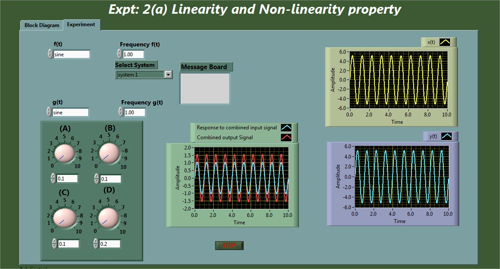
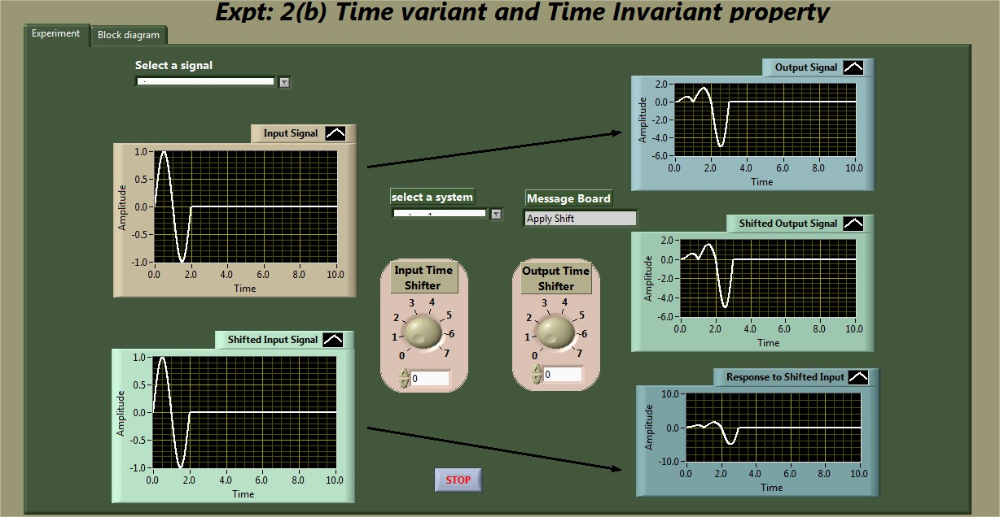
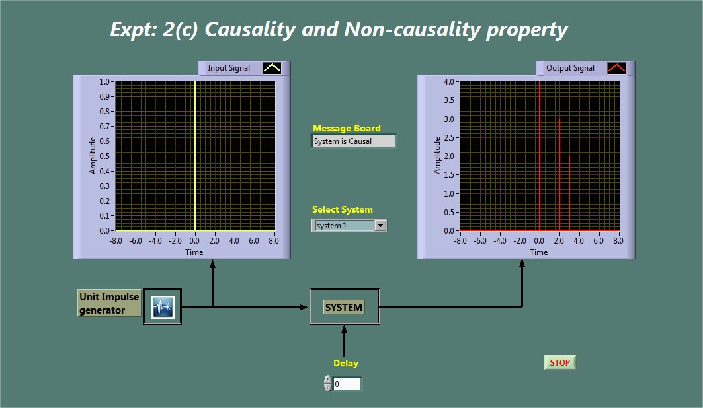
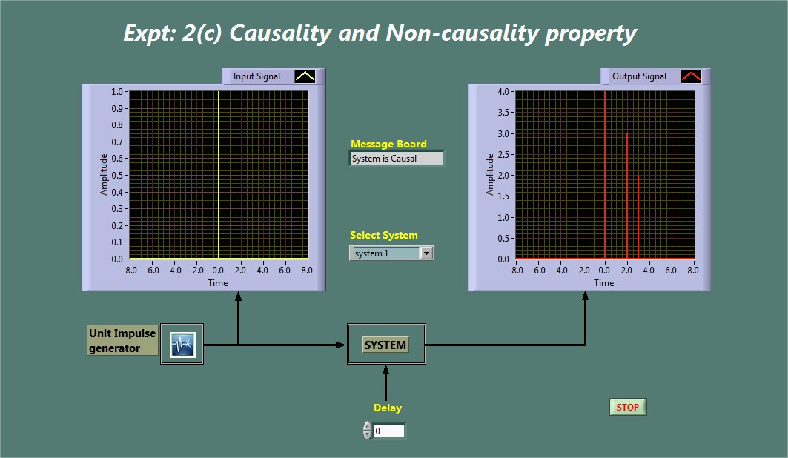

Shakshat Virtual Lab 
INDIAN INSTITUTE OF TECHNOLOGY GUWAHATI
Exp-2 System and their property


Objectives
1. To identify a given system as linear or non-linear.
2. To explore the time variance and time invariance property of a given system
3. To explore causality and non-causality property of a system.
Snapshot of the experiment windows


